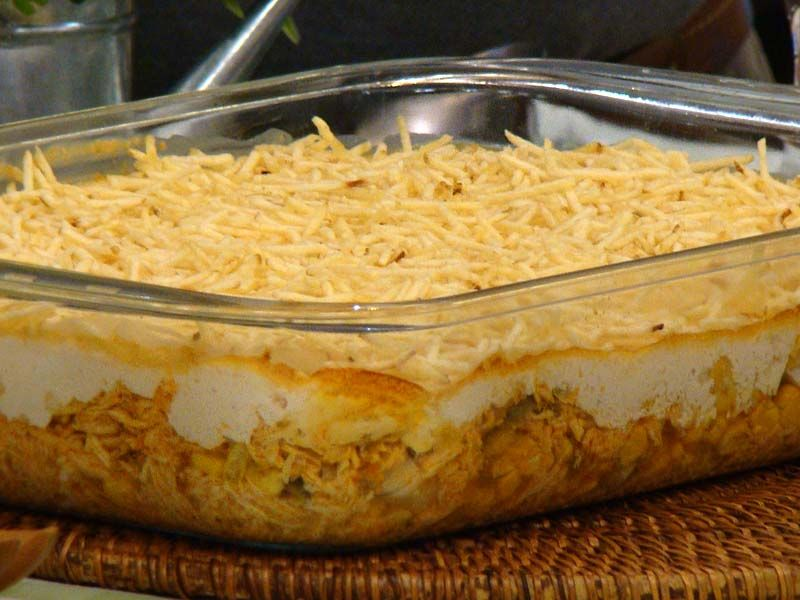

Fricassé de frango

Descrição:
O fricassé de frango e um prato clássico e delicioso. Essa receita é uma opção prática para um almoço ou jantar em família. Sirva com um arroz branco e batata palha para uma refeição completa e saborosa. Siga os passos dessa receita e desfrute do fricassé de frango, um prato que certamente vai agradar a todos.
Ingredientes (8 porções)
- 1 lata de creme de leite
- 1 copo de requeijão cremoso
- 2 peitos de frango desfiado
- 100g de batata palha
- 1 pitada de sal
- 1 lata de milho verde
- 100g de azeitona sem caroço
- 200g de mussarela fatiada
- 1 xícara de água
Modo de preparo
- Bata no liquidificador o milho, o requeijão, o creme de leite e a água.
- Refogue o creme do liquidificador com o frango desfiado, as azeitonas e o sal até ficar uma textura expessa.
- Coloque o refogado numa assadeira, cubra com mussarela e espalhe a batata por cima.
- Leve ao forno até borbulhar. Sirva com arroz branco.
Tempo de preparo: 40min
Página inicial